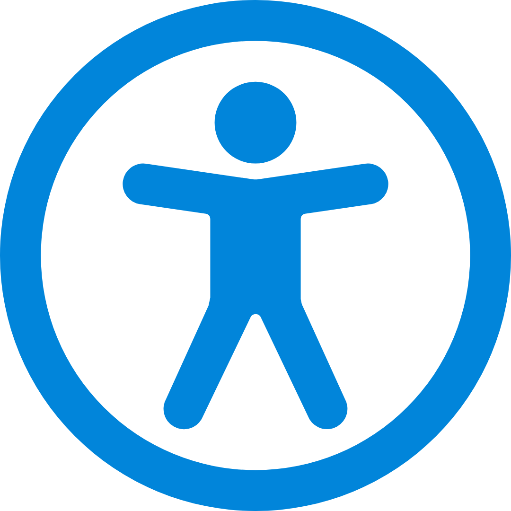

L'accessibilità non è un'opzione. È il punto di partenza.
Bellezza e funzionalità, naturalmente accessibili.
Disabilità visive.
Descrizioni alternative, compatibilità con screen reader, contrasto elevato e zoom fino al 200%.
Il portale mantiene contenuti e comandi leggibili, riconoscibili e utilizzabili anche quando la vista è ridotta o assente.
- Testo alternativo.Le immagini non testuali possiedono descrizioni accurate per essere interpretate dai software assistivi.
- Screen reader.La struttura HTML5 è semantica e ottimizzata per VoiceOver, NVDA e JAWS.
- Contrasto elevato.Testi e sfondi mantengono un rapporto minimo di luminanza pari a 4.5:1.
- Testo ridimensionabile.Il layout può essere ingrandito fino al 200% senza sovrapposizioni o perdita di informazioni.
Disabilità motorie.
Navigazione completa da tastiera, focus sempre visibile e interazioni semplici e prevedibili.
Ogni funzione essenziale è raggiungibile senza dipendere da movimenti precisi o dall'uso del mouse.
- Navigazione da tastiera.Il sito, compresi modali, popup e menu, è utilizzabile con TAB, INVIO e frecce direzionali.
- Focus visibile.Ogni elemento selezionato presenta un'indicazione chiara e coerente durante la navigazione.
Accessibilità cognitiva e uditiva.
Struttura ordinata, sottotitoli e trascrizioni, linguaggio semplice e contenuti immediati.
Una struttura prevedibile e un linguaggio diretto rendono le informazioni più facili da seguire, ascoltare e comprendere.
- Struttura ordinata.Intestazioni, sezioni e menu seguono una gerarchia logica e coerente.
- Sottotitoli e trascrizioni.I contenuti multimediali prevedono equivalenti testuali quando necessari.
- Linguaggio semplice.I testi sono immediati e privi di elementi lampeggianti potenzialmente dannosi.
Standard chiari, impegno continuo.
Conforme al livello AA.
Requisiti tecnici verificati, eccezioni documentate e miglioramento continuo del portale.
Il Portale Registro FSL Harzafi rispetta i requisiti tecnici WCAG 2.1, Livello AA, con alcune eccezioni documentate.
Conforme con eccezioniLa conformità non viene considerata un traguardo definitivo: controlli, correzioni e miglioramenti accompagnano l'evoluzione del portale.
Dichiarazione trasparente.
Nessun onere sproporzionato, nessun contenuto escluso e stato dichiarato con chiarezza.
Le condizioni che incidono sulla conformità vengono esposte in modo diretto e verificabile.
- Inosservanza della Legge 4/2004
- No
- Onere sproporzionato
- No
- Contenuto escluso dalla legislazione
- No
Un impegno anche legale.
Dichiarazione sempre raggiungibile, conformità ufficiale e riferimenti italiani ed europei.
La dichiarazione di accessibilità è presente nel footer delle pagine pubbliche e descrive ufficialmente lo stato di conformità del portale.
Contenuti redatti in ottemperanza alla Decisione di esecuzione UE 2018/1523.